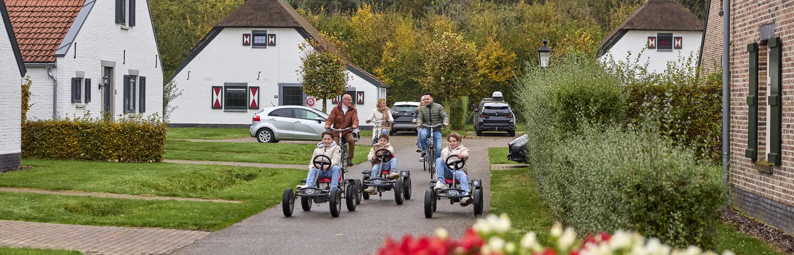
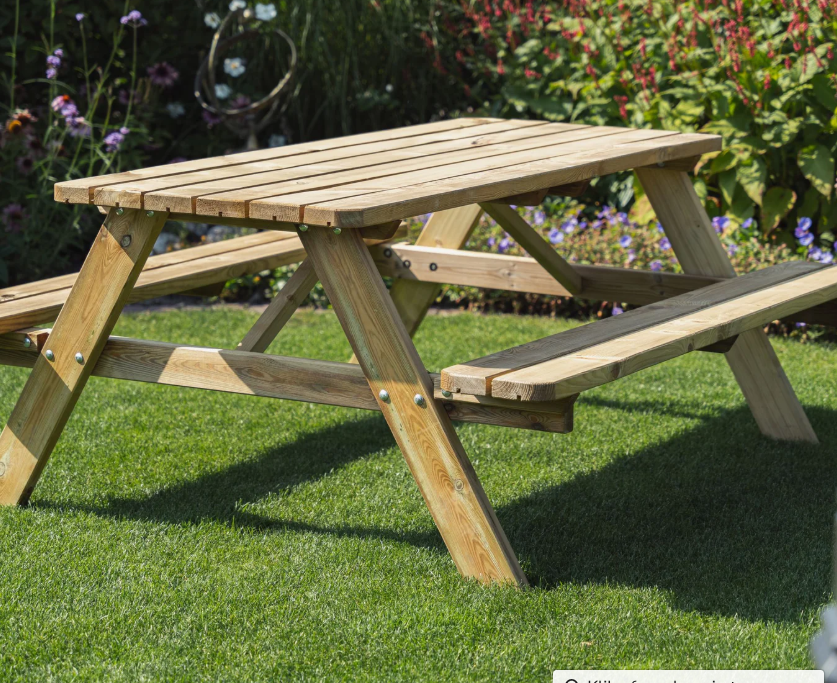
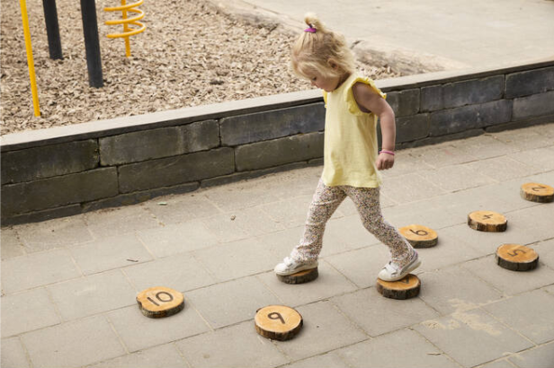
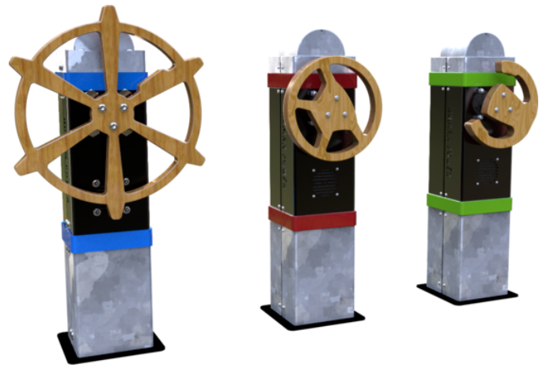

Eindproduct
Dit is ons campagne filmpje de we hebben gemaakt voor de Leistert


Wij zijn een groep van vijf eerstejaars studenten Tourism Management aan Breda University of Applied Sciences.
Als toekomstig professionals in toerisme leren wij hoe we beleving, duurzaamheid en ondernemerschap kunnen samenbrengen in recreatieve concepten.
Voor dit project kregen wij de kans om samen te werken met Recreatiepark De Leistert in Roggel. Zij hebben onze opleiding gevraagd mee te denken over de herinrichting van vier kavels op het park, met de vraag: hoe kunnen deze plekken meer betekenis en beleving krijgen voor de gasten van nu én de toekomst?
De afgelopen weken hebben wij onderzoek gedaan, ideeën ontwikkeld en deze vertaald naar vier unieke concepten. Denk hierbij aan het onderzoeken van de doelgroep binnen de Leistert. We nemen jullie erg graag mee in onze visie op de toekomst van deze kavels bij De Leistert.
Dit is ons campagne filmpje de we hebben gemaakt voor de Leistert
Wij hebben besloten om van alle vier de kavels gebruik te maken voor onze mini beleving. Wij hebben deze onderverdeeld onder de karakters van de Leistert zelf. Die verdeling leest u hieronder.

Centraal grasveld met picknicktafels voor ouders. Zij houden overzicht over spelende kinderen en genieten van koffie en rust.

Stapstenen met nummers in kavel 4. Pien rent erover naar het water om Dr. Fillistijn te ontvluchten – goed voor tellen en snelheid.

Uitkijktoren voor Pluck naast het grasveld. Hij speurt met verrekijker naar Dr. Fillistijn en waarschuwt Pien op tijd.

Duurzaamheidsspel in kavel 3: draaien aan stuur wekt energie en muziek op. Langer draaien = Dr. Fillistijn dichter bij Pien voor zijn onderzoek.